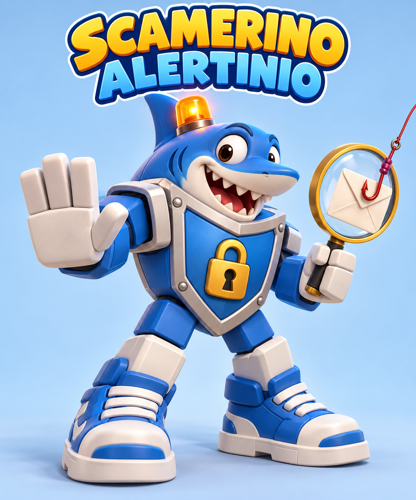

BezpiecznaAura · poradnik
Dziecko trafiło na oszustwo w sieci. Co teraz?
Instrukcja dla rodziców, opiekunów i nauczycieli: jak zareagować w pierwszych minutach, gdzie zgłosić incydent i jak zabezpieczyć dziecko na przyszłość.

Dla rodzica i opiekuna
Co zrobić, gdy dziecko kliknęło link, podało hasło lub kod, straciło przedmioty w grze, wydało pieniądze albo pisze z nim obcy dorosły.
Dla nauczyciela i pedagoga
Jak przyjąć zgłoszenie od ucznia, kogo powiadomić w szkole, jak ostrzec klasę, nie wskazując ofiary, i czego nie robić z prywatnymi danymi dziecka.
Darmowe + link = pytam dorosłego
Zasada, której uczy Scamerinio Alertinio. Poradnik podpowiada, co dalej robi dorosły.
Spis treści
- Pierwsze 5 minut: zasady wspólne dla każdej sytuacji2
- Najważniejsze kontakty3
- Scenariusz 1: „Darmowe Robuxy” i fałszywa strona logowania4
- Scenariusz 2: „Admin” prosi o kod weryfikacyjny5
- Scenariusz 3: Konto zostało przejęte6
- Scenariusz 4: Oszustwo przy wymianie przedmiotów7
- Scenariusz 5: Cheaty, „executory” i złośliwe programy8
- Scenariusz 6: „Darmowy render GFX”, plik HAR i ciasteczka9
- Scenariusz 7: Podejrzany SMS lub e-mail10
- Scenariusz 8: Pieniądze: karta, BLIK, zakupy w grze11
- Scenariusz 9: Obcy dorosły: „przejdźmy na Discorda”, prezenty, sekrety12
- Scenariusz 10: Wiadomość z przejętego konta kolegi13
- Zgłoszenie do CERT Polska krok po kroku14
- Kiedy i jak zawiadomić Policję15
- Rozdział dla nauczyciela16
- Profilaktyka: lista kontrolna na jeden wieczór17
- Jak rozmawiać z dzieckiem18
- Karta szybkiej reakcji (do wydruku)19
Stan na październik 2026. Poradnik ma charakter informacyjny i nie zastępuje porady prawnej. Nazwy usług, numery i adresy sprawdzaj na oficjalnych stronach instytucji. Wszystkie przykładowe wiadomości są zmyślone; linki zapisano z [.], żeby nie były klikalne.
Pierwsze 5 minut: zasady wspólne dla każdej sytuacji
Niezależnie od tego, co się stało, kolejność działań jest prawie zawsze taka sama. Najpierw dziecko, potem dowody, potem konta, na końcu zgłoszenia.
- Zachowaj spokój i podziękuj dziecku, że przyszło. Najważniejsze, żeby następnym razem też przyszło. Nie krzycz, nie odbieraj od razu urządzenia „za karę” i nie zawstydzaj. Oszuści celowo grają na emocjach i presji czasu; ofiarami padają też dorośli.
- Przerwij kontakt, ale niczego nie usuwaj. Dziecko nie odpisuje oszustowi, nie grozi mu i nie „demaskuje” go. Nie kasujcie rozmowy, wiadomości ani konta, dopóki nie zabezpieczycie dowodów.
- Zabezpiecz dowody. Zrób zrzuty ekranu: wiadomość, nick lub numer nadawcy, jego profil (z identyfikatorem), adres strony, datę i godzinę. Zapisz link jako tekst i nie otwieraj go ponownie. Zanotuj, co dziecko kliknęło, wpisało lub wysłało.
- Ustal, co wyciekło. Hasło? Kod z SMS-a lub e-maila? Dane karty, BLIK? Plik z komputera? Zdjęcia? Adres, szkoła, numer telefonu? Od tego zależy, które kroki z następnych stron są pilne.
- Zabezpiecz konta i pieniądze. Jeśli wyciekło hasło lub kod: od razu zmień hasło (z innego, czystego urządzenia), wyloguj wszystkie sesje i włącz weryfikację dwuetapową. Jeśli wyciekły dane karty lub BLIK: zadzwoń do banku od razu, nie jutro.
- Zgłoś. Na platformie (przycisk „Zgłoś” w grze lub komunikatorze), do CERT Polska (link, strona, SMS), do banku (pieniądze), na Policję (kradzież, wyłudzenie, kontakt dorosłego o podtekście seksualnym). Zgłoszenie do CERT pomaga zablokować stronę, zanim trafią na nią kolejne dzieci.
- Wróćcie do tematu za kilka dni. Krótka rozmowa: co zadziałało, co zrobimy inaczej. Jedno ustawienie z listy profilaktyki (str. 17) wdrożone od razu jest więcej warte niż cała lista „kiedyś”.
🚨Natychmiast dzwoń, gdy…
- dorosły z sieci namawia dziecko na spotkanie, prosi o zdjęcia lub „sekret”: 112, a potem zawiadomienie na komisariacie;
- z konta zniknęły pieniądze lub ktoś zna dane karty: infolinia banku;
- dziecko jest w kryzysie, boi się albo mówi, że dzieje mu się krzywda. 116 111 to telefon dla samego dziecka: może tam anonimowo porozmawiać z konsultantem o tym, co przeżywa (całodobowo, także czat). 800 100 100 to telefon dla ciebie: doradzą, jak rozmawiać z dzieckiem i co zrobić dalej (w dni robocze). Gdy zagrożone jest życie lub zdrowie dziecka: 112.
⛔Czego nie robić
- nie płać „okupu” ani „opłaty za odblokowanie”;
- nie wchodź ponownie w link „żeby sprawdzić”;
- nie kopiuj i nie przesyłaj dalej intymnych zdjęć dziecka, nawet jako dowodu; zgłoś je (scenariusz 9);
- nie publikuj sprawy z danymi dziecka w grupach rodziców ani w mediach społecznościowych.
Rola BezpiecznejAury. Dziecko może wkleić podejrzaną wiadomość pomocnikowi Scamerinio. Pomocnik zadaje kilka prostych pytań, wskazuje sygnały ostrzegawcze i proponuje następny krok, a dziecko może przekazać sprawę opiekunowi (zawsze widzi, co udostępnia). Pomocnik nie gwarantuje, że wiadomość jest bezpieczna, i nie zgłasza niczego sam: zgłoszenia opisane w tym poradniku składa dorosły. Nauczyciel widzi wyniki ćwiczeń klasy, a nie prywatne sprawy uczniów.
Najważniejsze kontakty
| Gdzie | Kiedy | Jak |
|---|
Policja: 112
lub komisariat | Pilnie, przez 112: bezpośrednie zagrożenie życia lub zdrowia dziecka; dziecko umówiło się na spotkanie z obcym dorosłym poznanym w sieci; ktoś właśnie szantażuje dziecko.
Bez pośpiechu, na komisariacie: kradzież pieniędzy lub konta, wyłudzenie, kontakt dorosłego o podtekście seksualnym, gdy sytuacja jest już opanowana. | 112 to numer alarmowy, całodobowy. Zawiadomienie o przestępstwie składasz na najbliższym komisariacie (str. 15). |
CERT Polska
incydent.cert.pl | Fałszywa strona logowania, link phishingowy, złośliwy plik, podejrzany e-mail, oszustwo internetowe. | Formularz na incydent.cert.pl (str. 14). |
| SMS 8080 | Podejrzany SMS z linkiem lub prośbą o dopłatę, kod lub dane. | Przekaż SMS bez zmian na numer 8080 (bezpłatnie). Trafia do CERT Polska. |
| Dyżurnet.pl (NASK) | Treści przedstawiające seksualne wykorzystanie dzieci, nielegalne treści. | Formularz na dyzurnet.pl, można anonimowo. Wystarczy link, bez kopiowania materiału. |
| 116 111 | Telefon zaufania dla dzieci i młodzieży (Fundacja Dajemy Dzieciom Siłę). Dziecko może porozmawiać anonimowo. | Bezpłatnie, całodobowo; także czat na 116111.pl. |
| 800 100 100 | Telefon dla rodziców i nauczycieli w sprawie bezpieczeństwa dzieci (FDDS). | Bezpłatnie, w dni robocze; także 800100100.pl. |
| Bank | Wyciek danych karty, kodu BLIK, loginu do bankowości, nieautoryzowana transakcja. | Numer z tyłu karty lub z aplikacji. Zastrzeżenie karty: także 828 828 828. |
| mObywatel / gov.pl | Wyciekł PESEL lub zdjęcie dokumentu (dziecka albo rodzica). | Zastrzeż numer PESEL w aplikacji mObywatel lub na gov.pl; zgłoś utratę dokumentu. |
| Roblox | Oszust w grze, przejęte konto, nieuprawniona transakcja. | „Zgłoś nadużycie” (Report Abuse) w grze lub przy profilu; formularz pomocy: roblox.com/support. |
| Discord | Oszust na serwerze lub w prywatnej wiadomości, przejęte konto. | Zgłoś wiadomość (prawy przycisk / przytrzymaj → Zgłoś); pomoc: support.discord.com. |
| Rzecznik Finansowy, UOKiK | Bank odmawia zwrotu; nieuczciwe praktyki sklepu lub gry wobec dzieci. | rf.gov.pl (spory z bankiem), uokik.gov.pl i miejski lub powiatowy rzecznik konsumentów. |
1
„Darmowe Robuxy” i fałszywa strona logowania
phishingRoblox, Discord, TikTok, YouTube
Najczęstszy schemat: obietnica waluty lub przedmiotu za „zalogowanie się”.
👀Jak to wygląda
„Hej! Event 10 000 Robux za darmo tylko dziś 🎁 Zaloguj się na robIox-bonus[.]xyz i wpisz kod z SMS, żeby odebrać!”
Sygnały: darmowe + link + pośpiech („tylko dziś”), literówka w adresie (wielkie I zamiast małego l), logowanie poza oficjalną aplikacją, prośba o kod. Prawdziwe nagrody Robloxa odbiera się w grze, bez logowania na obcej stronie i bez podawania kodów.
🙂Dziecko tylko kliknęło, nic nie wpisało
- Zamknij kartę i nie wracaj na stronę.
- Jeśli coś się pobrało, nie otwieraj pliku; usuń go i uruchom skan antywirusowy.
- Zgłoś adres do CERT Polska (str. 14), a nadawcę na platformie.
- Pochwal dziecko, że zatrzymało się przed wpisaniem danych.
🚨Dziecko wpisało login, hasło lub kod
- Teraz: zaloguj się do prawdziwego konta (wpisz adres ręcznie lub użyj oficjalnej aplikacji) i zmień hasło na nowe, niepowtarzalne.
- W ustawieniach bezpieczeństwa wyloguj wszystkie inne sesje.
- Włącz weryfikację dwuetapową (najlepiej aplikacja uwierzytelniająca lub e-mail rodzica).
- Jeśli dziecko używało tego hasła także gdzie indziej, zmień je i tam. Zacznij od skrzynki e-mail.
- Jeśli nie da się zalogować: scenariusz 3.
📣Gdzie zgłosić
- CERT Polska (incydent.cert.pl): adres fałszywej strony i zrzut ekranu. CERT może dopisać domenę do Listy ostrzeżeń, dzięki której operatorzy blokują stronę u innych użytkowników.
- Platforma: „Zgłoś nadużycie” przy wiadomości lub profilu nadawcy, kategoria „oszustwo / scam”.
- Jeśli link przyszedł e-mailem lub SMS-em, patrz scenariusz 7.
🛡️Na przyszłość
- Zasada domowa: „Do gry loguję się tylko w aplikacji, nigdy przez link z wiadomości”.
- Weryfikacja dwuetapowa na koncie gry i na e-mailu, do którego konto jest przypisane; e-mail rodzica jako adres odzyskiwania.
- Menedżer haseł w przeglądarce nie podpowie hasła na stronie z literówką w adresie. To wyraźny sygnał ostrzegawczy.
- Ćwiczenie: pokaż dziecku trzy adresy (jeden prawdziwy, dwa z literówkami) i poproś o znalezienie różnic.
2
„Admin” prosi o kod weryfikacyjny
podszywanie sięgry, Discord, SMS
Oszust udaje moderatora, pracownika firmy, „support” lub znajomego.
👀Jak to wygląda
„Jestem z moderacji Roblox. Twoje konto zostanie zbanowane za 10 min. Podaj kod weryfikacyjny, który właśnie dostałeś, żebyśmy mogli to wyjaśnić.”
Sygnały: podszywanie się pod obsługę, groźba i presja czasu, prośba o kod. W tym samym czasie oszust loguje się na konto dziecka (zna hasło albo je resetuje) i potrzebuje kodu, który dziecko właśnie dostało. Prawdziwa obsługa żadnej platformy nigdy nie prosi o hasło ani kod.
🙂Kod nie został podany
- Zakończ rozmowę i nie odpisuj.
- Skoro przyszedł kod, o który nikt nie prosił, ktoś zna hasło albo próbuje je zresetować. Na wszelki wypadek zmień hasło i wyloguj inne sesje.
- Zgłoś profil „admina” na platformie.
🚨Kod został podany
- Liczą się minuty: zaloguj się i zmień hasło, wyloguj wszystkie sesje, sprawdź e-mail i telefon przypisane do konta (oszust mógł je podmienić).
- Zmień hasło do skrzynki e-mail dziecka i sprawdź w niej reguły przekierowania.
- Jeśli konto jest już przejęte, przejdź do scenariusza 3.
- Jeśli kod dotyczył bankowości lub BLIK-a: scenariusz 8.
📣Gdzie zgłosić
- Platforma: zgłoszenie profilu za podszywanie się i oszustwo.
- CERT Polska: jeśli rozmowa zawierała link lub prowadziła na zewnętrzną stronę.
- Policja: jeśli konto przejęto i utracono przedmioty kupione za prawdziwe pieniądze lub doszło do szantażu.
🛡️Na przyszłość
- Zasada, którą dziecko powtarza na głos: „Kod jest jak klucz do domu. Nikomu go nie daję, nawet adminowi”.
- Ustalcie razem: groźba bana to sygnał, by przyjść do dorosłego, a nie działać w pośpiechu.
- Weryfikacja dwuetapowa przez aplikację uwierzytelniającą (zamiast SMS-ów) utrudnia przejęcie konta po wyłudzeniu hasła.
3
Konto zostało przejęte
przejęcie kontagra, Discord, e-mail
Dziecko nie może się zalogować, zniknęły przedmioty, z konta wychodzą dziwne wiadomości.
- Zacznij od e-maila. Konto gry odzyskuje się przez skrzynkę e-mail. Jeśli skrzynka też jest przejęta, najpierw odzyskaj ją (przez formularz dostawcy poczty), dopiero potem grę.
- Odzyskuj konto oficjalną drogą. „Nie pamiętasz hasła?” w oficjalnej aplikacji. Jeśli oszust zmienił e-mail lub telefon, wypełnij formularz pomocy platformy (Roblox: roblox.com/support, kategoria bezpieczeństwo konta / przejęte konto). Podaj nazwę konta, datę założenia, przybliżoną datę przejęcia, historię zakupów i dowody zakupu Robuxów.
- Nie korzystaj z „pomocy” obcych. Osoby oferujące odzyskanie konta za opłatę w komentarzach lub na Discordzie to kolejni oszuści.
- Po odzyskaniu: nowe hasło, wylogowanie wszystkich sesji, weryfikacja dwuetapowa, kontrola e-maila i telefonu przypisanych do konta, przegląd listy znajomych i ustawień prywatności.
- Uprzedź znajomych dziecka, że z konta mogły wychodzić fałszywe wiadomości (scenariusz 10). W klasie może to zrobić nauczyciel, bez wskazywania, czyje konto przejęto.
- Utracone przedmioty: zgłoś w formularzu pomocy platformy; zwrot zależy od jej zasad i nie jest gwarantowany. Przedmioty kupione za prawdziwe pieniądze to podstawa do zawiadomienia Policji (scenariusz 8, str. 15).
- Sprawdź urządzenie. Jeśli konto przejęto bez podania hasła, przyczyną może być złośliwy program lub wykradziona sesja (scenariusze 5 i 6). Wtedy zmiana hasła na tym samym, zainfekowanym komputerze nie wystarczy.
📣Gdzie zgłosić
Platforma (formularz pomocy i zgłoszenie konta, z którego wyszło oszustwo), CERT Polska (jeśli znasz link, plik lub stronę, przez które doszło do przejęcia), Policja (gdy utracono przedmioty lub środki o realnej wartości albo konto służy do dalszych oszustw).
🛡️Na przyszłość
- E-mail rodzica jako adres odzyskiwania i powiadomień o logowaniu.
- Zapiszcie kody zapasowe weryfikacji dwuetapowej w bezpiecznym miejscu (nie w telefonie dziecka).
- Raz w miesiącu: wspólny przegląd „aktywnych sesji” i powiadomień o logowaniu.
4
Oszustwo przy wymianie przedmiotów
oszustwo na zaufaniugry z handlem
„Ty wysyłasz pierwszy”, „pożycz konto”, „sprzedam taniej poza grą”, fałszywy pośrednik.
👀Jak to wygląda
„Dam ci mojego legendarnego peta za twój miecz. Ale ty wysyłasz pierwszy, bo ja już raz zostałem oszukany 😢”
Sygnały: prośba o zaufanie, wymiana poza oficjalnym systemem handlu w grze, presja emocjonalna, „pośrednik” wskazany przez drugą stronę, prośba o pożyczenie konta lub danych logowania „na chwilę”.
✅Co teraz
- Zrób zrzuty ekranu rozmowy i profilu drugiej strony (nick i identyfikator).
- Zgłoś profil na platformie jako oszustwo.
- Jeśli dziecko „pożyczyło” konto lub podało hasło, zabezpiecz konto jak w scenariuszu 3.
- Potraktuj stratę poważnie: dla dziecka jest prawdziwa, nawet jeśli przedmioty były wirtualne.
📣Gdzie zgłosić
- Platforma: zgłoszenie użytkownika; szansa na zwrot przedmiotu jest niewielka, ale zgłoszenie pomaga zablokować konto oszusta.
- Policja: gdy przedmioty miały realną wartość pieniężną (kupione za prawdziwe pieniądze lub sprzedane poza grą za przelew lub BLIK).
- CERT Polska: gdy „pośrednik” prowadził na zewnętrzną stronę.
🛡️Na przyszłość
- Zasada: wymieniam tylko przez oficjalny system wymiany w grze, w którym obie strony widzą i potwierdzają przedmioty. Jeśli ktoś proponuje inny sposób, rezygnuję.
- Konta i hasła się nie pożycza, nawet najlepszemu przyjacielowi.
- Nie kupujemy i nie sprzedajemy przedmiotów poza grą za prawdziwe pieniądze (dotyczy to też kont rodzeństwa).
5
Cheaty, „executory” i złośliwe programy
malwarekomputer, telefon
„Darmowy skrypt”, „auto-farm”, „mod do gry”, „generator Robuxów” do pobrania.
Sygnały: program do pobrania z Discorda, YouTube lub nieznanej strony; instrukcja „wyłącz antywirusa, bo wykrywa fałszywie”; plik w archiwum z hasłem; prośba o uruchomienie jako administrator. Takie programy często wykradają zapisane w przeglądarce hasła, ciasteczka sesji i dane kart, nie tylko konto w grze. CERT Orange Polska opisał setki tysięcy kont Roblox przejętych w ten sposób.
🚨Program został uruchomiony
- Odłącz komputer od internetu (Wi-Fi, kabel). Nie loguj się na nim do niczego.
- Z innego, czystego urządzenia zmień hasła w kolejności: e-mail, bankowość, konta płatności i sklepy, konto gry, Discord i media społecznościowe. Wyloguj wszystkie sesje na każdym z tych kont.
- Jeśli w przeglądarce na zainfekowanym komputerze były zapisane karty płatnicze: zadzwoń do banku i rozważ zastrzeżenie karty.
- Wykonaj pełny skan aktualnym antywirusem. Przy wątpliwościach najbezpieczniej przywrócić system do stanu fabrycznego (po skopiowaniu dokumentów; nie kopiuj programów ani plików pobranych razem z cheatem).
- Dopiero czysty komputer podłącz do sieci; włącz też weryfikację dwuetapową, gdzie jej brakowało.
📣Gdzie zgłosić
- CERT Polska (incydent.cert.pl): link, z którego pobrano program, nazwa pliku i, jeśli to możliwe, sam plik w archiwum z hasłem (opisz to w zgłoszeniu; nie wysyłaj go nikomu innemu).
- Platforma, na której program był reklamowany (film, serwer Discord, kanał).
- Policja i bank: gdy doszło do strat finansowych.
🛡️Na przyszłość
- Dziecko korzysta z konta bez uprawnień administratora; instalacja programów wymaga hasła rodzica.
- Nie zapisujemy kart płatniczych i haseł do bankowości w przeglądarce, z której korzysta dziecko.
- Antywirus i aktualizacje systemu włączone; zasada: „Kto każe wyłączyć antywirusa, ten jest oszustem”.
- Rozmowa o tym, dlaczego cheaty kuszą (presja rówieśnicza, chęć dorównania), zamiast samego zakazu.
6
„Darmowy render GFX”, plik HAR i ciasteczka
kradzież sesjikomputer, przeglądarka
Przejęcie konta bez hasła i bez kodu.
👀Jak to wygląda
„Zrobię ci darmowy render 3D twojego awatara! Wyślij mi tylko plik, który pokaże ci przeglądarka po wciśnięciu F12 → Network → Save as HAR.”
Dlaczego to groźne: plik HAR, „cookies” czy „token” zawierają dane aktywnej sesji. Kto je ma, może korzystać z konta jak zalogowany użytkownik, z pominięciem hasła i weryfikacji dwuetapowej. Podobnie działają prośby o wklejenie „kodu” w konsolę przeglądarki (F12) lub przeciągnięcie „zakładki” do paska.
🚨Plik lub kod został wysłany
- Wyloguj wszystkie sesje w ustawieniach bezpieczeństwa konta (to unieważnia wykradzioną sesję), następnie zmień hasło.
- Jeśli w tej samej przeglądarce dziecko było zalogowane do innych serwisów (e-mail, Discord, YouTube), zrób to samo na każdym z nich.
- Sprawdź, czy na koncie nie zmieniono e-maila, telefonu ani ustawień; jeśli tak, scenariusz 3.
📣Gdzie zgłosić
Platforma (profil „grafika”), CERT Polska (jeśli w rozmowie padł link do strony lub formularza), Policja przy stratach.
🛡️Na przyszłość
- Zasada: nigdy nie wysyłam plików z przeglądarki, „cookies” ani „tokenów” i nie otwieram F12 na czyjąś prośbę.
- Przeglądarka z osobnym profilem dla dziecka, bez zalogowanych kont rodziców.
- „Darmowe” usługi od obcych w zamian za plik techniczny traktujemy jak „darmowe + link”: pytam dorosłego.
7
Podejrzany SMS lub e-mail
smishing, phishingtelefon, poczta
„Dopłata do paczki”, „blokada konta”, „wygrałeś”, „zaległa faktura”, „Twój kod BLIK”.
Sygnały: link skrócony lub z dziwną domeną, prośba o drobną dopłatę (np. 1,99 zł) albo kod, presja czasu, nadawca podszywający się pod kuriera, bank, operatora, urząd lub platformę gier. Dzieci z własnym telefonem dostają te same SMS-y co dorośli.
📱SMS: jak zgłosić
- Nie klikaj linku i nie odpowiadaj.
- Przekaż SMS w niezmienionej formie na numer 8080 (w telefonie: przytrzymaj wiadomość → Przekaż / Prześlij dalej). To bezpłatne; wiadomość trafi do CERT Polska.
- Zrób zrzut ekranu z numerem nadawcy, potem możesz usunąć SMS i zablokować numer.
✉️E-mail: jak zgłosić
- Nie otwieraj załączników i linków.
- Zgłoś przez incydent.cert.pl; dołącz treść wiadomości i nagłówki (w poczcie: „Pokaż oryginał”) albo plik .eml.
- Oznacz wiadomość jako spam lub phishing w swojej skrzynce; to uczy filtr.
🚨Dziecko kliknęło i coś podało
Dane logowania: kroki ze scenariusza 1. Dane karty, BLIK, login do banku: scenariusz 8, telefon do banku natychmiast. Imię, nazwisko, PESEL, adres: zastrzeż PESEL (mObywatel), zgłoś do CERT, obserwuj korespondencję i próby kontaktu „w sprawie paczki”.
🛡️Na przyszłość
- U operatora komórkowego zablokuj usługi Premium SMS i płatności przez operatora na numerze dziecka.
- Zasada: „Nie płacę i nie podaję kodu z wiadomości. Jeśli coś jest ważne, sprawdzam w aplikacji albo pytam dorosłego”.
- Włączone filtry antyspamowe i ochrona przed niebezpiecznymi stronami w telefonie (domyślnie w wielu przeglądarkach i u operatorów, którzy korzystają z Listy ostrzeżeń CERT).
8
Pieniądze: karta, BLIK, zakupy w grze
straty finansowekarta rodzica, sklepy z aplikacjami
Wyłudzone dane karty lub kod BLIK, nieoczekiwane obciążenia, „subskrypcje”.
- Zadzwoń do banku od razu. Numer z karty lub z aplikacji banku, nie z wiadomości. Poproś o zastrzeżenie karty, zablokowanie BLIK-a lub dostępu do bankowości i o wstrzymanie jeszcze nierozliczonych transakcji. Karty możesz też zastrzec pod numerem 828 828 828.
- Złóż w banku reklamację nieautoryzowanej transakcji (najlepiej na piśmie lub w aplikacji, z datami i kwotami). Nieautoryzowane transakcje bank co do zasady musi zwrócić albo uzasadnić odmowę; ostateczny wynik zależy od okoliczności, m.in. od tego, czy dziecko korzystało z karty za twoją zgodą.
- Zakupy w aplikacji lub grze zrobione przez dziecko bez twojej wiedzy: poproś o zwrot w sklepie, przez który przeszła płatność (Apple: reportaproblem.apple.com; Google Play: historia zamówień w Sklepie Play; konsola: wsparcie producenta) oraz w pomocy platformy gry. Napisz wprost, że zakupu dokonało dziecko.
- Zawiadom Policję przy wyłudzeniu (fałszywa strona, BLIK dla „kolegi”, przelew dla „sprzedawcy”). Potwierdzenie zawiadomienia często przydaje się w reklamacji bankowej.
- Gdy bank odmówi, możesz złożyć odwołanie, a potem zwrócić się do Rzecznika Finansowego.
📣Gdzie zgłosić
Bank (natychmiast), Policja (wyłudzenie), CERT Polska (strona lub link, przez które wyłudzono dane), sklep z aplikacjami lub platforma gry (zwrot), UOKiK lub rzecznik konsumentów (gdy gra lub serwis stosuje nieuczciwe praktyki wobec dzieci).
🛡️Na przyszłość
- W sklepie z aplikacjami: wymagane hasło lub zgoda rodzica przy każdym zakupie (Rodzina / Family Link / Chmura rodzinna).
- W grze: limit miesięcznych wydatków w kontroli rodzicielskiej; najlepiej doładowania kartami podarunkowymi o stałej kwocie zamiast podpiętej karty.
- Dla nastolatka: konto lub karta dziecięca z limitem i powiadomieniami o każdej transakcji.
- Zasada: „Kod BLIK jest jak gotówka. Nie podaję go nikomu przez wiadomość, nawet znajomemu”.
9
Obcy dorosły: „przejdźmy na Discorda”, prezenty, sekrety
możliwy groominggry, Discord, Telegram, Snapchat
Najpoważniejszy scenariusz w tym poradniku.
👀Jak to wygląda
„Fajnie się gra! Tu jest za dużo moderacji, napisz do mnie na Discordzie, dam ci tam darmowe itemy. Nie mów rodzicom, to nasza tajemnica.”
Sygnały: przeniesienie rozmowy poza platformę z moderacją, prezenty (przedmioty, waluta, doładowania), prośba o sekret, komplementy i „rozumienie” dziecka lepiej niż rodzice, pytania o wygląd, zdjęcia, dom, szkołę, propozycja spotkania lub rozmowy wideo, szantaż („pokażę twoje zdjęcia”).
🚨Co robić
- Bezpieczeństwo dziecka przede wszystkim. Przy umówionym spotkaniu, groźbach lub szantażu dzwoń na 112.
- Nie konfrontuj się ze sprawcą, nie pisz do niego z konta dziecka, nie usuwaj rozmów i nie blokuj go przed zabezpieczeniem dowodów (blokada lub usunięcie konta może skasować historię).
- Zabezpiecz dowody: zrzuty ekranu rozmów, nick, identyfikator i link do profilu, daty. Wyjątek: jeśli w rozmowie są intymne zdjęcia dziecka, nie rób ich kopii i nie przesyłaj ich nikomu, nawet Policji e-mailem. Zostaw je na urządzeniu i powiedz o nich Policji.
- Zawiadom Policję (komisariat). Uwodzenie dziecka poniżej 15 lat przez internet, w tym składanie mu propozycji o charakterze seksualnym, jest przestępstwem (art. 200a Kodeksu karnego), nawet jeśli do spotkania nie doszło.
- Zgłoś profil na platformie (kategoria: bezpieczeństwo dzieci) i treści do Dyżurnet.pl.
- Zadbaj o dziecko. Powiedz wyraźnie, że to nie jego wina. Rozważ rozmowę ze specjalistą; wsparcia udzielają 800 100 100 (tobie) i 116 111 (dziecku). Powiadom też wychowawcę lub pedagoga szkolnego.
🛡️Na przyszłość
- Konto dziecka z ustawieniami odpowiednimi do wieku (w Robloxie: konto dla dzieci z ograniczonym czatem; kontrola rodzicielska po powiązaniu z kontem rodzica; w Discordzie: Centrum rodzinne, filtr treści, wiadomości tylko od znajomych).
- Zasada: „Dorosły, który prosi o sekret przed rodzicami, jest sygnałem alarmowym. Sekrety, od których robi się nieswojo, wolno i trzeba zdradzić”.
- Interesuj się, z kim dziecko gra: pytaj z ciekawością, a nie podejrzliwością.
- Nigdy nie zawstydzaj i nie karz za to, że dziecko odpowiedziało obcemu; strach przed karą to główny powód, dla którego dzieci milczą.
10
Wiadomość z przejętego konta kolegi
zaufanieDiscord, komunikatory, gry
„Darmowe Nitro”, „zagłosuj na mnie”, „przypadkiem zgłosiłem twoje konto”, „pożycz BLIK-a”.
👀Jak to wygląda
„Siema, robię konkurs w szkole, zagłosujesz na mnie? Wejdź tu i zaloguj się Discordem: dlscord-gift[.]com/vote 🙏”
Sygnały: znajomy pisze nietypowo (inny styl, pora, język), prosi o kliknięcie, zalogowanie, kod QR, przelew lub BLIK. Kod QR „do zalogowania” daje oszustowi dostęp do konta osoby, która go zeskanuje.
✅Co teraz
- Potwierdź innym kanałem: telefon, rozmowa na żywo, wiadomość do rodzica kolegi.
- Nie klikaj, nie skanuj kodu, nie wysyłaj pieniędzy.
- Jeśli dziecko już się zalogowało lub zeskanowało kod: kroki ze scenariuszy 1 i 3.
- Daj znać koledze (i jego rodzicom), że jego konto jest przejęte; dalej postępują według scenariusza 3.
📣Gdzie zgłosić
- Platforma: zgłoszenie wiadomości i informacja, że konto wygląda na przejęte.
- CERT Polska: link lub strona z wiadomości.
- Szkoła: jeśli wiadomości krążą w klasie, nauczyciel może ostrzec wszystkich (str. 16).
🛡️Na przyszłość
- Zasada: „Prośba o pieniądze, kod lub logowanie, nawet od przyjaciela, wymaga potwierdzenia na żywo lub telefonicznie”.
- Hasło rodzinne lub „słowo-klucz” z najbliższymi znajomymi na wypadek próśb o pomoc.
- Nie skanujemy kodów QR do logowania otrzymanych od innych osób.
Zgłoszenie do CERT Polska krok po kroku
CERT Polska (zespół działający w NASK) przyjmuje zgłoszenia incydentów od każdego. Zgłoszenie zajmuje kilka minut, nie wymaga konta i chroni kolejne osoby: zgłoszone fałszywe strony mogą trafić na Listę ostrzeżeń, na podstawie której operatorzy i przeglądarki blokują je u innych użytkowników.
Co zgłaszać
- fałszywe strony logowania (gry, banki, poczta, kurierzy);
- linki z wiadomości w grach, na Discordzie, w komunikatorach;
- e-maile phishingowe i złośliwe załączniki;
- złośliwe programy („cheaty”, „generatory”, „mody”);
- oszustwa w sklepach internetowych i ogłoszeniach;
- SMS-y: przez przekazanie na 8080.
Co przygotować
- adres strony (skopiowany jako tekst, nie otwieraj go ponownie);
- zrzuty ekranu wiadomości i strony;
- skąd przyszedł link: gra, nick nadawcy, serwer Discord, numer telefonu, adres e-mail;
- datę i godzinę;
- co zostało podane lub pobrane i co już zrobiliście (zmiana hasła, telefon do banku);
- e-mail kontaktowy (dorosłego).
Jak wysłać
- Wejdź na incydent.cert.pl (wpisz adres ręcznie).
- Wybierz rodzaj zgłoszenia (np. phishing / fałszywa strona, złośliwe oprogramowanie, oszustwo).
- Wklej adres strony lub opis, dołącz zrzuty ekranu. W opisie napisz, że ofiarą jest dziecko i w jakiej grze lub aplikacji doszło do kontaktu: to pomaga w analizie schematów wymierzonych w dzieci.
- Podaj e-mail kontaktowy dorosłego i wyślij. Zachowaj numer zgłoszenia lub potwierdzenie.
⚠️Ważne: czego CERT nie zrobi
CERT Polska analizuje zagrożenia, ostrzega i blokuje niebezpieczne strony, ale nie odzyskuje pieniędzy, przedmiotów ani kont i nie prowadzi postępowania karnego. Przy stratach finansowych zgłoszenie do CERT to dodatek do telefonu do banku i zawiadomienia Policji, a nie ich zamiennik.
Przykładowy opis zgłoszenia: „3.10.2026 ok. 17:40 mój syn (11 lat) dostał w grze Roblox prywatną wiadomość od użytkownika [nick, ID] z linkiem robIox-bonus[.]xyz obiecującym darmowe Robuxy. Strona podszywa się pod logowanie Roblox i prosi o kod z SMS-a. Syn wpisał login i hasło, kodu nie podał. Hasło zostało zmienione, sesje wylogowane. W załączniku zrzuty ekranu wiadomości i strony.”
Kiedy i jak zawiadomić Policję
Kiedy warto
| Sytuacja | Przykładowa podstawa (Kodeks karny) |
|---|
| Wyłudzenie pieniędzy, BLIK-a, płatności za fikcyjny przedmiot | oszustwo (art. 286), oszustwo komputerowe (art. 287) |
| Przejęcie konta, włamanie do poczty, wykradzenie sesji | nielegalny dostęp do informacji (art. 267) |
| Podszywanie się pod dziecko lub rodzica w celu wyrządzenia szkody | kradzież tożsamości (art. 190a § 2) |
| Groźby, szantaż („opublikuję”, „zhakuję”), wymuszenie | groźba karalna (art. 190), wymuszenie (art. 191, art. 282) |
| Dorosły nawiązuje kontakt z dzieckiem poniżej 15 lat w celu seksualnym, prosi o zdjęcia, proponuje spotkanie | art. 200a, art. 200 i art. 202 (zawsze zgłaszaj) |
Kwalifikację prawną ustalają Policja i prokuratura. Nie musisz jej znać, żeby złożyć zawiadomienie; tabela ma tylko pokazać, że sprawa nie jest „za mała”.
Jak się przygotować
- Zawiadomienie składa rodzic lub opiekun prawny dziecka, ustnie na komisariacie (spiszą protokół) lub pisemnie.
- Zabierz: dowód osobisty, wydruki lub zrzuty ekranu na nośniku, listę dat i zdarzeń, nazwy kont i identyfikatory sprawcy, potwierdzenia transakcji, numer zgłoszenia z CERT i reklamacji bankowej.
- Nie zabieraj i nie kopiuj intymnych zdjęć dziecka; powiedz, że są na urządzeniu.
- Poproś o potwierdzenie złożenia zawiadomienia (przyda się w banku i w reklamacji u platformy).
- Przesłuchanie dziecka w sprawach o przestępstwa seksualne odbywa się w specjalnych warunkach (przyjazny pokój, z udziałem psychologa). Nie przepytuj dziecka wielokrotnie w domu.
Dlaczego zgłaszać nawet małe kwoty? Oszuści działają seryjnie i na wielu dzieciach naraz. Pojedyncze zgłoszenie z identyfikatorem konta, numerem telefonu lub rachunku pozwala połączyć sprawy i namierzyć sprawców. Z badań wynika, że rodzice dowiadują się o cyberatakach na dzieci znacznie rzadziej, niż do nich dochodzi, więc każde zgłoszenie wypełnia lukę.
Rozdział dla nauczyciela
Uczniowie często mówią o oszustwie najpierw koledze, potem nauczycielowi, a dopiero na końcu rodzicom. Twoja reakcja decyduje, czy uczeń przyjdzie znowu.
Gdy uczeń zgłasza ci sprawę
- Wysłuchaj w spokojnym miejscu, bez oceniania. Powiedz, że dobrze, że ci o tym mówi.
- Oceń pilność. Zagrożenie bezpieczeństwa dziecka (obcy dorosły, szantaż, spotkanie, intymne zdjęcia)? Natychmiast uruchom procedurę interwencji ze szkolnych standardów ochrony małoletnich i powiadom osobę wyznaczoną w szkole oraz dyrekcję. Przy bezpośrednim zagrożeniu: 112.
- Nie przeglądaj telefonu ucznia i nie rób zdjęć jego prywatnych rozmów, chyba że wymaga tego procedura i dzieje się to przy uczniu. Nie przesyłaj intymnych materiałów nikomu, nawet dyrekcji lub Policji.
- Powiadom rodziców (wychowawca lub pedagog). Przekaż im ten poradnik i wskaż właściwy scenariusz. To rodzic zabezpiecza konta, rozmawia z bankiem i składa zawiadomienie.
- Zanotuj w dokumentacji przewidzianej w standardach: data, kto zgłosił, co ustalono, kogo powiadomiono. Nie kopiuj treści prywatnych wiadomości ponad potrzebę.
- Pomóż zgłosić link lub stronę do CERT Polska, jeśli rodzic nie umie; zgłoszenie nie wymaga danych dziecka.
📢Ostrzeżenie dla klasy
- Mów o schemacie, nie o osobie: „W naszej szkole krąży wiadomość o darmowych Robuxach…”.
- Pokaż przykład z zamazanymi nickami i adresem zapisanym z
[.].
- Przypomnij zasadę: „Darmowe + link = pytam dorosłego” i gdzie szukać pomocy (116 111).
- Przy przejętych kontach uczniów poproś wszystkich o zmianę haseł i włączenie weryfikacji dwuetapowej w domu z rodzicem.
🏫Profilaktyka w szkole
- Gotowe lekcje: pakiet warsztatowy „Oszustwo czy nie?” (osobny PDF
warsztaty-bezpieczna-aura.pdf): 3 lekcje po 45 min dla klas 4-8, bez komputerów, z kartami pracy i planszami.
- Krótki trening rozpoznawania oszustw powtarzany co kilka tygodni działa lepiej niż jedna duża lekcja: efekt jednorazowego szkolenia zanika po około miesiącu.
- BezpiecznaAura: misja treningowa i test przed–po pokazują nauczycielowi wyniki klasy; prywatne sprawy uczniów trafiają tylko do opiekuna.
- Wpisz zasady reagowania na oszustwa internetowe do szkolnych standardów ochrony małoletnich.
- Na zebraniu rozdaj rodzicom kartę szybkiej reakcji (ostatnia strona).
Czego nie robić w szkole: nie zawstydzaj ucznia przy klasie, nie wymagaj pokazania prywatnych rozmów „żeby sprawdzić”, nie wysyłaj zrzutów ekranu w grupach rodziców ani na szkolnym czacie, nie mów, że „sam sobie winien, bo grał”.
Profilaktyka: lista kontrolna na jeden wieczór
Zróbcie to razem z dzieckiem. Tłumacz każdy krok: dziecko, które rozumie, po co jest weryfikacja dwuetapowa, rzadziej da się namówić na podanie kodu.
| Ustawienie | Po co |
|---|
| Weryfikacja dwuetapowa na e-mailu, koncie gry, Discordzie | Samo hasło nie wystarczy do przejęcia konta. Najlepiej aplikacja uwierzytelniająca lub e-mail rodzica. |
| E-mail i telefon rodzica jako dane odzyskiwania konta dziecka | Rodzic widzi powiadomienia o logowaniu i zmianach; konto da się odzyskać. |
| Kody zapasowe zapisane w bezpiecznym miejscu | Odzyskanie konta po utracie telefonu. |
| Unikalne hasła + menedżer haseł | Wyciek jednego hasła nie otwiera innych kont. Menedżer nie podpowie hasła na fałszywej stronie. |
| Kontrola rodzicielska w grze (Roblox: powiązanie konta rodzica, ustawienia czatu, limit wydatków) | Ograniczenie kontaktu z obcymi i kontrola wydatków. |
| Prywatność: wiadomości tylko od znajomych, ukryty wiek, szkoła, miasto | Mniej kontaktów od obcych, mniej danych do podszywania się. |
| Zakupy wymagają zgody rodzica (App Store / Google Play / konsola) | Brak przypadkowych i wyłudzonych płatności. |
| Brak zapisanych kart w przeglądarce i grze na urządzeniu dziecka; ewentualnie karty podarunkowe | Złośliwy program nie wykradnie danych karty. |
| Blokada usług Premium SMS i płatności przez operatora | Ochrona przed subskrypcjami i „dopłatami”. |
| Konto użytkownika bez uprawnień administratora, antywirus, aktualizacje | Dziecko nie zainstaluje „cheata” bez wiedzy rodzica. |
| PESEL zastrzeżony (rodzice; dziecko, jeśli jego dane wyciekły) | Utrudnia zaciąganie zobowiązań na cudze dane. |
| Umowa rodzinna spisana i powieszona przy komputerze | Jasne zasady i obietnica „nie ukarzę za to, że przyjdziesz”. |
🤝Propozycja umowy rodzinnej
- Darmowe + link = pytam dorosłego.
- Nikomu nie podaję hasła ani kodu, nawet adminowi i przyjacielowi.
- Loguję się tylko w oficjalnej aplikacji, nigdy przez link z wiadomości.
- Wymieniam przedmioty tylko w oficjalnej wymianie w grze.
- Nie pobieram cheatów i programów od obcych; kto każe wyłączyć antywirusa, jest oszustem.
- Sekrety z dorosłymi z internetu zawsze mówię rodzicom.
- Rodzic obiecuje: jeśli przyjdziesz z problemem, najpierw pomogę, a nie ukarzę.
Jak rozmawiać z dzieckiem
Badania pokazują, że rodzice dowiadują się tylko o części cyberataków na nastolatków, a wielu z nich błędnie zakłada, że dziecko samo przyjdzie po pomoc. Najskuteczniejszą ochroną jest dziecko, które nie boi się mówić.
💬Mów
- „Dobrze, że mi o tym mówisz. Razem to ogarniemy.”
- „Oszuści są w tym bardzo dobrzy, nabierają też dorosłych.”
- „Pokaż mi, jak to wyglądało, chcę zrozumieć.”
- „Co teraz poradzisz koledze, który dostanie taką wiadomość?”
- „Gdyby to się powtórzyło, przyjdź od razu, nawet w nocy.”
✋Unikaj
- „Jak mogłeś być tak naiwny?”
- „Koniec z grami” jako pierwsza reakcja (dziecko następnym razem ukryje problem).
- Przesłuchiwania i wielokrotnego wypytywania o szczegóły, zwłaszcza w scenariuszu 9.
- Opowiadania o sprawie innym dorosłym przy dziecku.
Na spokojnie, bez incydentu
- Grajcie razem 15 minut i poproście dziecko, żeby pokazało, jak działa czat, wymiana i znajomi w grze.
- Ćwiczcie na zmyślonych wiadomościach (jak w scenariuszach): „Oszustwo czy nie? Po czym poznajesz?”. Pytajcie też o uczciwe oferty, żeby dziecko nie uznało wszystkiego za oszustwo.
- Odwróćcie role: dziecko jest „pomocnikiem” i tłumaczy wam, dlaczego wiadomość jest podejrzana. Uczenie innych utrwala wiedzę.
- Powtarzajcie co kilka tygodni; jednorazową rozmowę szybko się zapomina.
BezpiecznaAura w domu. Gdy dziecko dostanie podejrzaną wiadomość, może wkleić ją pomocnikowi Scamerinio. Pomocnik nie ocenia dziecka, zadaje proste pytania („Czy ktoś prosi o kod? Czy jest link? Czy ktoś się spieszy?”), wyjaśnia sygnały ostrzegawcze i proponuje przekazanie sprawy opiekunowi. Opiekun widzi przekazaną sprawę i może odpowiedzieć. Dzięki temu rozmowa z rodzicem zaczyna się od faktów, a nie od strachu.
Karta szybkiej reakcji
Wydrukuj, powieś przy komputerze, rozdaj na zebraniu.
- Spokój. Podziękuj dziecku. Bez kar i zawstydzania.
- Przerwij kontakt, nic nie usuwaj.
- Zrzuty ekranu: wiadomość, nick/ID lub numer, link jako tekst, data i godzina.
- Co wyciekło? Hasło · kod · karta/BLIK · plik/program · zdjęcia · adres/PESEL.
- Zabezpiecz: nowe hasło (z czystego urządzenia) → wyloguj wszystkie sesje → weryfikacja dwuetapowa. Pieniądze → bank od razu.
- Zgłoś: platforma + CERT Polska; przy stratach lub kontakcie dorosłego → Policja.
- Wróćcie do tematu za kilka dni i wdrożcie jedno zabezpieczenie.
| 112 | zagrożenie życia, spotkanie dziecka z obcym dorosłym, szantaż |
| incydent.cert.pl | fałszywa strona, link, złośliwy plik, e-mail |
| 8080 | przekaż podejrzany SMS (bezpłatnie) |
| dyzurnet.pl | treści seksualne z udziałem dzieci |
| 116 111 | telefon zaufania dla dziecka, 24/7 |
| 800 100 100 | wsparcie dla rodziców i nauczycieli |
| 828 828 828 | zastrzeganie kart płatniczych |
Darmowe + link = pytam dorosłego
Kod jest jak klucz do domu. Nikomu go nie daję.